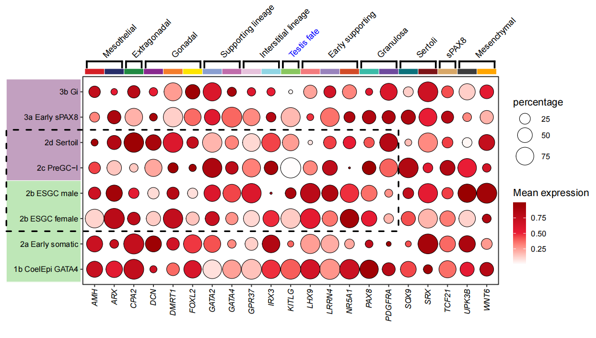

Chapter 2 Introduction
In fact, adding multiple different annotations (text, segment, rect, points, images and so on) beside the plot is needed. But we do not want to spend much time ,energy and code rendering our raw figures. The Ai(Artificial Intelligence) is a good choice for you to produce a complex plot but without much accuracy.
Here I provide a package jjAnno that you can add different annotaions including point, text, rect, segemnt, image beside or inside the plot. This will save your much time and cost to make a complex figure.
2.1 Installation
You can install the development version of jjAnno like so:
# install.packages("devtools")
devtools::install_github("junjunlab/jjAnno")
2.3 Example
Let’s see an example:
library(jjAnno)
data("pdot")
pdotWe add some annotations on this figure:
# add segment
P1 <- annoSegment(object = pdot,
annoPos = 'top',
xPosition = c(1:21),
yPosition = 8.8,
segWidth = 0.7,
pCol = c(useMyCol('stallion',20),'orange'))
# add rect1
P2 <- annoRect(object = P1,
annoPos = 'left',
annoManual = T,
yPosition = list(c(0.5,4.5),
c(4.5,8.5)),
xPosition = c(-3.5,0.3),
pCol = rep('white',2),
pFill = useMyCol('calm',2),
alpha = 0.5)
# add rect2
P3 <- annoRect(object = P2,
annoPos = 'left',
annoManual = T,
yPosition = list(c(2.5),
c(6.5)),
xPosition = c(-3.5,16.5),
pCol = 'black',
pFill = 'transparent',
lty = 'dashed',
lwd = 3)
# add branch
P4 <- annoSegment(object = P3,
annoPos = 'top',
annoManual = T,
xPosition = list(c(1,3,4,7,9,11,12,15,17,19,20),
c(2,3,6,8,10,11,14,16,18,19,21)),
yPosition = 9.2,
segWidth = 0.8,
pCol = rep('black',11),
addBranch = T,
branDirection = -1,
lwd = 3)
# add text
text <- c('Mesothelial','Extragonadal','Gonadal','Supporting lineage','Interstitial lineage',
'Testis fate','Early supporting','Granulosa','Sertoli','sPAX8','Mesenchymal')
# add text
annoSegment(object = P4,
annoPos = 'top',
annoManual = T,
xPosition = list(c(1,3,4,7,9,11,12,15,17,19,20),
c(2,3,6,8,10,11,14,16,18,19,21)),
yPosition = 9.2,
segWidth = 0.8,
pCol = rep('black',11),
addBranch = T,
branDirection = -1,
lwd = 3,
addText = T,
textLabel = text,
textCol = c(rep('black',5),'blue',rep('black',5)),
textRot = 45,
hjust = 0)